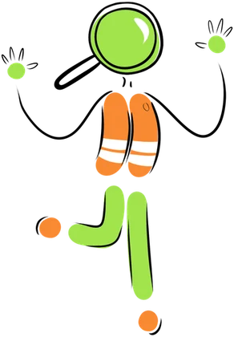
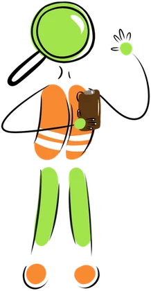
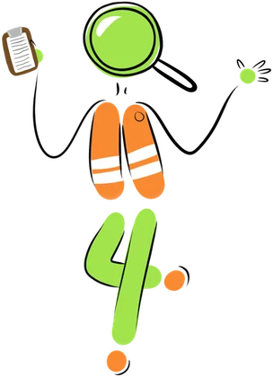
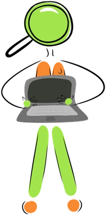
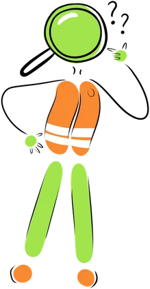
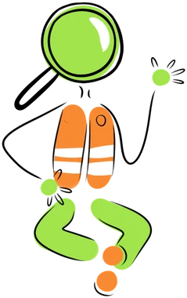
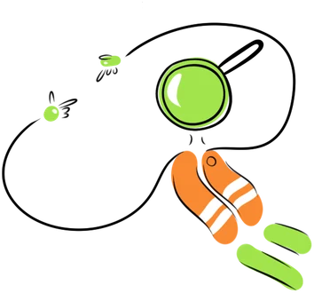

Resumo de
Dica do Luposo: passe o mouse ou toque nos gráficos e barras para ver os valores e o que cada item significa.
Dinheiro que entrou e que saiu, mês a mês
O caminho do dinheiro
À esquerda, de onde veio cada real. À direita, para onde ele foi. A espessura de cada faixa é proporcional ao valor.

De onde vem o dinheiro
A Prefeitura tem duas grandes fontes: os impostos que ela mesma cobra e os repasses do Estado e da União. Toque em cada grupo para ver os detalhes.

Receitas por origem
Quanto depende de fora
Previsto x arrecadado
Para onde vai o dinheiro

De cada R$ 100 pagos pela Prefeitura
Despesa paga por área
Com o que o dinheiro é gasto
Do compromisso ao pagamento
Toda despesa pública passa por três etapas. A diferença entre elas mostra o que já foi contratado mas ainda não foi entregue ou pago.
Quem recebe da Prefeitura
Empresas, entidades e pessoas que receberam pagamentos da Prefeitura no período, do maior para o menor. Salários, aposentadorias e pensões de servidores não entram nesta lista. O CPF de pessoas físicas aparece mascarado, como publicado pelo Tribunal de Contas. Toque em um credor para ver a descrição do maior empenho.

| # | Credor | Principal gasto | Área |
|---|
A Prefeitura está cumprindo a lei?
A Constituição e a Lei de Responsabilidade Fiscal fixam mínimos para saúde e educação e um teto para gastos com pessoal. Os percentuais de saúde e educação são calculados sobre a receita de impostos; o de pessoal, sobre a receita corrente líquida dos últimos 12 meses.

Páginas especiais
Temas que costumam gerar dúvidas, explicados em detalhe.
Glossário

- Empenho
- É a reserva do dinheiro para uma despesa. A Prefeitura se compromete a pagar, mas o serviço ainda não foi entregue.
- Liquidação
- A Prefeitura confere que o produto ou serviço foi entregue como combinado. A partir daí, ela deve o valor.
- Pagamento
- O dinheiro sai da conta da Prefeitura e chega ao fornecedor. É o número usado na maior parte desta página.
- Credor
- Empresa ou pessoa que tem valores a receber da Prefeitura por um produto ou serviço.
- Função
- A grande área de governo a que a despesa pertence, como saúde, educação ou urbanismo. É um padrão nacional.
- Receita corrente líquida (RCL)
- Tudo o que o município arrecada de forma regular, menos algumas deduções. É a base para os limites da Lei de Responsabilidade Fiscal.
- Restos a pagar
- Despesas empenhadas em um ano que só são pagas no ano seguinte.
- Royalties de Itaipu
- Compensação financeira que a Itaipu Binacional paga a Foz e a outros municípios pelas áreas alagadas pelo reservatório.
Sobre os dados

Os totais de receita e despesa vêm do Relatório Resumido da Execução Orçamentária (RREO) enviado pela Prefeitura ao Tesouro Nacional e consideram todos os órgãos do município (Prefeitura, Câmara, autarquias e fundações), sem contar duas vezes os repasses entre eles. A lista de credores e a despesa paga por área e por mês vêm dos empenhos e pagamentos enviados ao Tribunal de Contas do Paraná. Os dois conjuntos foram conferidos e batem. Valores nominais, sem correção pela inflação.
Encontrou algo errado? Fale com o Observatório Social do Brasil – Foz do Iguaçu pelo site fozdoiguacu.osbrasil.org.br.